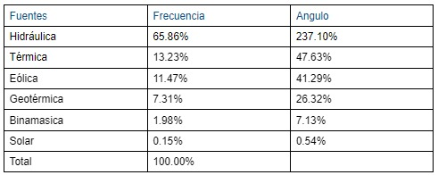
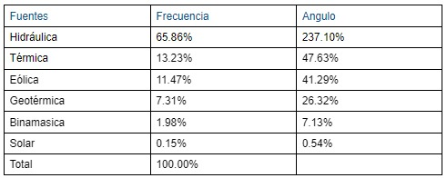

Densidad poblacional
La ciudad de San José tiene una población estimada de 1,373,000 habitantes. Tiene una extensión territorial de 44,62 km2. Esta cifra representa el 36% de la población total de Costa Rica, que aunque pareciera alta, en realidad San José tiene la más baja densidad de población. La población total de hombres es de 22, 616 y la de mujeres es de 24, 397.
Puriscal
Puriscal, tiene una extensión de 555,8 km2 y su población de 36, 689 habitantes. La población masculina es de 18, 415 y la femenina es de 18, 274. La longitud máxima es de 40 km, en dirección norte a sur, desde la confluencia del río Chucás con la quebrada La Pita hasta el río Chires. El río Pirris establece límite al norte del cantón, el sur limita con la cordillera de la Costa y su límite oriental es el cantón de Dota.
Aserri
En el cantón de Aserrí su extensión es de 167, 7 km2 y su población es de 68, 802 habitantes. Su población masculina es de 30, 638 y la femenina es de 32, 168 y limita con: al este, Desamparados; al oeste, A costa; al norte, Alajuelita y Desamparados; al sudeste, León Cortés, Tarrazú y Parrita.
Tarrazú
En el cantón de Tarrazú tiene una extensión de 289,9 km2 y 18, 334 habitantes. Su población masculina es de 9,113 y la femenina es de 9,221. Sus límites son: al norte de León Cortés, al sur Quepos y Dota, al este Dota y el Guarco y al oeste León Cortés y Quepos.
Santa Ana
En el último lugar Santa Ana tiene una extensión de 61,3 km2 y su población es de 59, 770 habitantes. Su población masculina es de 28, 699 y la femenina es de 31, 071. Limita al norte con el cantón de Alajuela, al sur y oeste con el cantón de Mora, al este con el cantón de Escazú, y al noreste con el cantón de Belén.
Lengua Materna y Extrangera
De acuerdo a Marta Delgado, profesora de francés, la lengua materna es el Español. El inglés generalmente lo emplean para el turismo, en porcentajes, un 99,3% de la población costarricense habla español.
Diversidad linguistica
Asimismo, San José tiene sus lenguas minoritarias, como el huetar, una lengua indigena extinta en el cantón de Puriscal desde el siglo XX, que en su época fue el idioma más hablado de Costa Rica. (Lic. Heriberto Quesada)
Prestamos linguisticos
En San José se utilizan varios extranjerismos como: Facebook, laptop, marketing y chat.Anglicismos como: sponsor, en vez de patrocinante manager, en lugar de gerente baby, en vez de bebé “Thank you”, por “Gracias” OK, por “Está bien.” Shopping, en vez de compras Set, en vez de conjunto cool, por bello boom, por auge blister, por envase. Arabismos como: algodón, alfombra, alcoba, aldea, alcalde
Regionalismos
Asimismo regionalismos como: Espantar la mula/ irse a algún lugar, Agarrar la lata/ coger el bús, mae/ amigo, Cantar viajeras/ Morir o irse, Dar por la nuca/ pagar mucho, Esta pal tigre/ alguien que está mal, Está reventadisimo/ Alguien que es muy guapo, Jalarse una torta/ tener un hijo no esperado, Le amarraron el perro/ A alguien le deben mucho y no le pagan, Me la pela/ No me importa.
Textos literarios
Aquileo Echeverría, nació en San José, Costa Rica en 1866 y murió en Barcelona en 1909. Aunque sus obras caben dentro del costumbrismo campesino, tiene influencia en el modernismo, lo consideraron como “El poeta nacional de Costa Rica". Algunas de sus obras destacadas son: Romances (1903) y Concherías (1905).
Festividades Religiosas
En la provincia de San José se celebran varias festividades religiosas. Por ejemplo, en el cantón de Tarrazú se celebra al Santo Patrono San Marcos Evangelista. San Marcos, autor del evangelio más corto y antiguo. El 25 de abril, el pueblo se prepara para su santo.
En Aserrí celebran a San Luis de Tolosa, un jóven que subió al trono a los 12 años. El pueblo lo celebra el 25 de agosto de cada año.
En el cantón de Puriscal la parroquia posee 12 filiales, como por ejemplo Piedades que su patronazgo es Nuestra Señora de la Piedad, Salitrillos que su patronazgo es Nuestra Señora de los Ángeles y Grifo Alto que su patronazgo es la Inmaculada Concepción.
Tradiciones y Costumbres
En San José, cada cantón tiene tradiciones y costumbres únicas, en Puriscal se organiza desde el 1999 la tradicional Feria del Chicharrón en la primera semana del mes de diciembre, también se promocionan lugares turísticos, venta de artesanías y otros productos de la zona. En Aserri una de sus tradiciones son las cabalgatas, es un evento que se lleva a cabo cada año durante las fiestas patronales, el objetivo principal es rendir homenaje, los jinetes muestran sus habilidades y también se dan excursiones. En Tarrazú se da la feria del café, es importante para la industria cafetalera de Costa Rica, es una oportunidad para fortalecer la relación entre distintos sectores de la esta industria. En Santa Ana se realiza la feria del agricultor, todos los domingos desde temprano se llena el lugar con productores del suelo nacional y ofrecen productos frescos.
Juegos Populares
Dentro de los juegos más populares de Costa Rica están: Carreras de sacos: es un juego competitivo en el que los jugadores deben ponerse un saco en las piernas y saltan hacia delante hasta una meta, brincar la cuerda, bailar trompos: se utiliza un cordel para hacer girar el trompo en el suelo con cierta fuerza, avispero y bolero: se atrapa una bolita de madera con un un mango de la misma.
Deporte mas destacado
El deporte más destacado es el fútbol, es un deporte importante para el país ya que es hogar de varios equipos profesionales. Los más notables son el Deportivo Saprissa, la Liga Alajuelense y La selección Nacional de fútbol de Costa Rica. El equipo de la selección ya ha estado varias veces en la Copa Mundial.
Deportista mas reconocido
Kaylor Navas es uno de los mejores deportistas de Costa Rica y el futbolista más premiado, tras triunfar en el Saprissa, jugó en el Albacete Levante, antes de fichar con el Real Madrid en 2014. En el club merengue, Navas lo ganó todo durante un lustro: tres Ligas de Campeones de la UEFA, una Liga española, cuatro Mundiales de clubes de la FIFA, tres Supercopa de Europa y una Copa del Rey. En 2019 fue fichado por el PSG, con el que ya obtuvo dos ligas y una Copa de Francia. Este 2022 jugó su tercera copa mundial.
Shirley Cruz es la futbolista centroamericana más exitosa de todos los tiempos. En Costa Rica ganó tres campeonatos locales y en 2005 saltó a Francia. Allí jugó con el París Saint-Germain y el Olympique Lyon. Con este equipo alcanzó seis títulos de la liga francesa, obtuvo dos Copas de Francia y dos Ligas de Campeones de la UEFA. Después pasó por la liga china, volvió a Costa Rica, donde conquistó otra corona con el Alajuelense y este año debutó en la National Women 's Soccer League de
Musica y bailes folckloricos
De acuerdo a Uber blog (2018). Dentro de los bailes más famosos de San José están: El swing criollo, tonos rápidos y característicos giros durante el baile lo convierten en algo único. Se baila bastante en el centro de San José. Otro baile sería el chachachá, su origen cubano influye en la cultura tica. El baile de cimarronas es muy típico en San José, muchos pueblos del país hacen presentaciones con música cimarrona y especialmente el 31 de octubre se las calles de San José se pueden presenciar muy bien.
Uno de los trajes típicos de este país consiste en que la mujer usa un vestido ancho con colores vivos, con trenzas, una flor en su cabello y sandalias. El hombre utiliza un traje sencillo con colores chillantes como el azul y el amarillo, un pañuelo en el cuello y un fajón rojo que a la hora de bailar se lo quitan. En San José, la mujer vestía una falda y blusa volada, la blusa llevaba un cinto negro, el cabello adornado con flores y en el cuello traian un listón de terciopelo negro.
Moneda
La primera moneda usada en Costa Rica fue el peso cuyo uso empezó en 1839 por Braulio Carrillo y actualmente la moneda es el colón, ha sido la moneda de Costa Rica desde 1896. Actualmente, existen seis títulos en billetes y siete tipos de monedas distintas en circulación. 1 córdoba son 14,79 colones, 100 córdobas son 1,457.88 colones, 1000 córdobas son 14,578. 81 colones.
Gastronomía
La ciudad de San José, en Costa Rica, ofrece una rica y variada oferta gastronómica que refleja la diversidad cultural y la fusión de sabores que caracteriza a este país centroamericano. En sus calles y mercados, los visitantes pueden encontrar una amplia gama de platos tradicionales y contemporáneos que satisfacen todos los gustos. La cocina costarricense se basa en ingredientes frescos y locales, y en San José se puede degustar desde los emblemáticos "casados" (plato típico compuesto por arroz, frijoles, carne, plátano y ensalada), hasta deliciosos ceviches preparados con mariscos frescos y aderezados con limón y especias.
Además de la comida costarricense tradicional, San José también ofrece una gran diversidad de opciones internacionales gracias a su carácter multicultural. Los restaurantes de la ciudad sirven platos de distintos lugares del mundo, como comida italiana, japonesa, mexicana, peruana y mucho más. Los mercados como el Mercado Central son verdaderos tesoros gastronómicos, donde los lugareños y los visitantes pueden probar bocados auténticos y descubrir los sabores únicos de San José. En resumen, la comida de San José es una mezcla vibrante de tradición y modernidad, ofreciendo una experiencia culinaria única y deliciosa para todos los paladares.
Comercio
Ésta es una de las capitales más jóvenes de América Latina, y una de las más progresivas en términos de comercio, arte y arquitectura, haciéndola un destino atractivo para los viajeros de todo el mundo. También destaca: Distritos, Transporte, Cocina, Climas, Atracciones y Cultura Popular.
El transporte desde y hacia distintos puntos del país, esto es posible gracias a una extensa cadena de buses, taxis, etc. La comida típica del país es fácil de encontrar y a precios bajos. A pesar de que San José está en una zona intertropical tiene un clima agradable todo el año. En San José algunas de sus actividades económicas que se practican en la provincia son la agricultura de café, caña de azúcar, legumbres, hortalizas, tubérculos, frutas, producción de leche y la elaboración de artesanías. El mercado de café en Costa Rica creció a gran velocidad. Para mediados del siglo XIX, el país exportaba su propio café a Europa y su producción se hizo aún mayor. Haberse convertido en uno de los principales motores de desarrollo económico de la nación, le mereció al café costarricense el nombre de “grano de oro”. Además, Costa Rica se considera uno de los mejores productores de café del mundo y goza de una buena reputación por su calidad.
Según datos obtenidos mediante un estudio de mercado del sector artesanal en Costa Rica, realizado en 2017 por la Universidad Nacional (UNA), para el MEIC, el país importa anualmente alrededor de $50 millones de dólares (unos ¢30 mil millones de colones) en artesanías y productos similares, provenientes principalmente de Asia, Norteamérica, Sudamérica y América Central. Además, se desprende del estudio que el 80% de los turistas nacionales y extranjeros, preferirían la compra de artesanías con un sello que garantice su origen, calidad, identidad, diseño y cuidado del ambiente.
Turismo
Entre los lugares turísticos más destacados de San José está el teatro nacional, inaugurado en 1897. El museo Nacional, con valiosas colecciones, además de estas, el edificio en sí mismo tiene su importancia histórica o El Museo de oro precolombino, Allí podrás disfrutar de más de 1500 objetos hechos en oro que pertenecen al pueblo precolombino que vivió en el actual territorio costarricense. Todas las piezas del museo datan de entre los años 500 y 1500
Otros cantones también poseen sitios turísticos, como por ejemplo Tarrazú que cuenta con el valle de los santos, que es una región geográfica del centro-sur de Costa Rica, corresponde a un amplio sector de una serie de valles intermontanos de los cantones de Tarrazú, Dota y León Cortés Castro.
En Puriscal se encuentra La Iguana Chocolate, una empresa familiar que cultiva cacao chocolate de Costa Rica, ofrecen tours por la granja, cursos de cacao y grupos donde se experimentan todos los procesos involucrados en pasar del árbol a la trufa o barra.La Iguana Chocolate esta ubicada en Mastatal, Puriscal, Costa Rica.
El Refugio Animal de Costa Rica se ubica en Santa Ana, San José, Costa Rica. Este es un centro de rehabilitación que ofrece recorridos, con cocodrilos, tortugas, serpientes, monos y otros animales. También, algunas de sus metas son, procurar el retorno al medio ambiente de los animales que recuperamos, mejorar la calidad de vida de aquellos animales que no pueden ser liberados al medio ambiente y contribuir a la educación de la población que los visita.
piedra de Aserrí no es reconocida por ser un lugar turístico, es conocida por su historia. Está ubicada en los cerros al oeste del cantón de Aserrí, para llegar ahí se tiene que hacer una caminata de 45 minutos montaña arriba, pasando por senderos, cafetales y campos agrícolas. Una vez ahí se aprecia una hermosa vista al valle central de San José. Esta piedra está asociada con la leyenda de la bruja zárate, dicen que en sus laderas está la cueva en la que vivía la bruja. Actualmente, el público hace deportes extremos en esta locación, como lo es la escalada de roca.
Artesanias
Las artesanías de Costa Rica son casi tan llamativas para los turistas como lo son los bosques, cascadas y playas. Los visitantes no se van sin algún recuerdo del hermoso lugar, se destacan la artesanía en madera, hecha de árboles locales. Entre los tipos de artesanías se encuentran:
Maderas: Permite crear las carretas típicas con múltiples colores y figuras, también otros artículos como animales.
Tejidos en cabuya: Se hacen a partir de las hojas de una planta fibrosa de las que se extraen hilos para fabricar objetos de utilidad.
Cesteria La materia prima de esta artesanía es el tule, la pita y el bambú. En esta técnica se destacan los miembros de la Reserva Indígena Quitirrisí.
Hicaros o huacalLos también llamados huacales se hacen con base en los frutos del árbol de Jícaro, cuyo cultivo se da principalmente en el sur del país. Los artesanos limpian el interior de los frutos y luego los decoran.
MascarasSon hechas con madera de balsa son una de las más importantes representaciones artísticas de las comunidades indígenas boruca Maleku y Talamanca. Los motivos de estas máscaras son de animales y elementos propios de la cosmovisión indígena.
Innovacion tecnologica
Ecoturismo
El éxito a través del ecoturismo, Costa Rica ha sido capaz de demostrar que la conservación y el crecimiento económico va de la mano. Costa Rica es un país en el que la naturaleza se manifiesta de una manera única, más del 25% del territorio está destinado a parques y distintas áreas protegidas. Algunos ejemplos de ecoturismo en San José son: Parque Nacional Volcán Arenal, Refugio de Vida Silvestre Curú y Parque Nacional Tortuguero.
La principal razón del éxito del ecoturismo en Costa Rica va a la participación activa del sector privado, la excepcional diversidad biológica y la interacción entre la amplia red de áreas protegidas.
Aunque San José no es biológicamente conocido como otras partes del país, aun así es una combinación de paisajes que llaman la atención de cualquier aventurero. Eco tours en San José tiene a su disposición el conocimiento sobre los ricos naturales de Costa Rica, mientras crea conciencia sobre la diversidad biológica y sus beneficios. La región norte de San José tiene muchos refugios de vida silvestre y parques nacionales, entre ellos el Parque Nacional Metropolitano La Sabana, su biodiversidad cuenta con una gran cantidad de árboles en su mayoría eucaliptos, ciprés y pinos.
Distribución y clasificacion de los bosques
Los bosques de Costa Rica, San José se clasifican en bosque muy húmedo tropical,bosque muy húmedo premontano, bosque pluvial montano bajo y bosque húmedo tropical. La distribución del bosque húmedo tropical se encuentra en las tierras bajas de la zona Norte y Caribe, junto con las del centro y Sur del Pacifico como regiones principales en Costa Rica. El bosque húmedo premontano está restringido a dos cuencas en la parte central del país, en el densamente poblado valle central, desde San José hasta Turrucares y en el valle San Ramón. El bosque pluvial montano bajo, la mayor parte está a lo largo de la ladera suroeste de la Cordillera Central, al sur de San José y Cartago, y en el valle de Dota.
Industrias
De acuerdo a la Ing. Feoli y Lic. Jiménez 1999 con la definición oficial del Ministerio de economía, industria y comercio de Costa Rica es considerado industria aquella actividad que produce una transformación mecánica o química de algún producto o componente. La industria manufacturera absorbe el 16% de la población que labora en el país y el 80,6% de los establecimientos industriales corresponde a empresas con menos de 20 trabajadores, es decir, lo que se denomina pequeña o micro empresa. La división industrial de alimentos, bebidas y tabaco es la más importante en términos de producción industrial (genera el 46% de la población total) Por otro lado, la división de textiles, vestido cuero aporta sólo un 6% de la producción industrial, pero es la actividad que absorbe la mayor cantidad de mano de obra: 31% del empleo industrial del país.
Proyecto plasma
De acuerdo a. Irina G. (2023), El proyecto tiene como uno de sus objetivos promover un adecuado tratamiento de los residuos sanitarios e impactar positivamente la protección del medio ambiente costarricense. Desarrollar y explotar las tecnologías de plasma en Costa Rica, así como contribuir con la investigación en plasmas como futura fuente de energía (investigación en fusión) que se realiza a nivel internacional.
El Tecnológico de Costa Rica (TEC), por medio de su Laboratorio de Plasmas para Energía de Fusión y Aplicaciones, lidera un proyecto que busca que los residuos hospitalarios sean desintegrados con tecnología de plasma
Esto lo ejecutan por medio del proyecto denominado: “Mitigación de las infecciones hospitalarias y reducción del impacto ambiental de los desechos médicos en el Hospital Nacional de Niños mediante tecnología basada en el plasma” .
El Grupo de Investigación en Plasmas y sus Aplicaciones del Tecnológico de Costa Rica nace en septiembre de 2008 como iniciativa del científico costarricense Dr. Iván Vargas, experto en Física de Plasmas y Fusión Nuclear. Mediante un convenio realizado entre el Tecnológico de Costa Rica y el Centro de Investigaciones Energéticas, Medioambientales y Tecnológicas de España (CIEMAT) se inicia la investigación en fusión nuclear en Costa Rica a través de la ejecución de dos proyectos de cooperación entre ambas instituciones. Desde finales del 2008 se inicia un proceso de compra de equipos especializados para implementar en el TEC lo que hoy en día es el Laboratorio de Plasmas y sus Aplicaciones del TEC.
A nivel de energía de fusión, en Latinoamérica, Costa Rica se pone al nivel de Brasil y Chile, únicos países en tener un laboratorio para realizar investigaciones en fusión. La novedad es que Costa Rica está en proceso de acreditarse como el primer Centro de Colaboración en Plasmas y Fusión Nuclear del Organismo Internacional de Energía Atómica (OIEA) del mundo, con lo cual se convertirá en el centro de referencia para la región latinoamericana y del Caribe.En el mundo, sólo ocho países realizan investigaciones en un dispositivo de tipo Stellarator para producir electricidad: Estados Unidos, China, Japón, Rusia, Alemania, España, Ucrania y Costa Rica. A nivel de aplicaciones se harán estudios del plasma en medicina, agricultura y la industria. En el caso de la agricultura, por ejemplo, se ha demostrado que el plasma sirve para mejorar los cultivos y hasta eliminar los plaguicidas. Mientras que en el campo de la medicina se ha comprobado que el plasma puede mejorar los implantes médicos.
Leyes de biodiversidad
La ley 7788 tiene como objetivo conservar la biodiversidad y el uso sostenible de los recursos en Costa Rica. Promueve la participación activa de los sectores sociales, prevé mecanismos de participación en evaluaciones de impacto ambiental y planes, programas y políticas y establece acciones populares y otras medidas de acceso a la justicia para la defensa y protección de la biodiversidad
Algunos de sus articulos son
Participación en actividades y proyectos (artículo 95): La Secretaría Técnica Nacional deberá realizar audiencias públicas de información y análisis sobre el proyecto concreto y su impacto, cuando lo considere necesario. El costo de la publicación correrá a costa del interesado. Inversión de la carga de la prueba (109): La carga de la prueba, de la ausencia de contaminación, degradación o afectación no permitidas, corresponderá a quien solicite la aprobación, el permiso o acceso a la biodiversidad o a quien se le acuse de haber ocasionado daño ambiental.
Educación ambiental (artículos 10 y 86): La ley aspira a promover la educación y la conciencia pública sobre la conservación y la utilización de la biodiversidad. La educación biológica deberá ser integrada dentro de los planes educativos en todos los niveles previstos.
Contaminacion que afecta a San jose
Sobreexplotación de los recursos del mar: Desde hace unos 14 años no se tienen estadísticas para medir el ritmo al que están explotando estos recursos, otros indicadores revelan un grave daño a poblaciones. Se ha de disponer de nuevas estadísticas que ayuden a la toma de decisiones a la hora de utilizar recursos pesqueros.
Contaminación del aire: Se ha aumentado el uso de vehículos privados, estos consumen combustibles de origen fósil, esto ha provocado una grave contaminación en el aire. Se ha de mejorar la accesibilidad a transporte público, modernizar la flota de vehículos costarricenses.
Uso abundante de agroquímicos: Uso excesivo de fertilizantes y plaguicidas, cuando frutas y verduras llegan los consumidores, aún contienen de estos residuos químicos, También en hoyos, por lo que se contamina el agua. La solución es fomentar el uso de nuevas tecnologías y hacer un mejor manejo de ciertos desechos que son bañados por el agua y hacen que esta se contamine.
Especies en peligro de extincion
Costa Rica a pesar de no ser un país grande es uno de los que tienen mayor diversidad de especies, esta gran diversidad se debe a su posición geográfica tropical al estar entre zonas costeras hay una gran variedad de ecosistemas.
Guacamaya rojaEste hábitat indispensable para la supervivencia de una especie emblemática se reduce año tras año a causa de los incendios forestales, la expansión ganadera y la aparición de nuevos asentamientos humanos .
Resplandeciente quetzal El quetzal guatemalteco está considerado casi amenazado en la Lista Roja de la UICN, siendo la destrucción de su hábitat la principal amenaza. Tiene un papel importante en la mitología mesoamericana y está estrechamente relacionado con Quetzalcóatl.
Jaguar Las amenazas a las que se enfrentan los jaguares en Costa Rica, no difieren a las de otros países como la pérdida de hábitat, presión de cacería y disminución de sus presas las cuales están llevando al borde de la extinción a la especie.
OceloteSu mayor amenaza en este momento es la urbanización, que está provocando una disminución continua en su hábitat
Cedrela odorata: La especie se encuentra en una situación vulnerable debido a la reducción del hábitat; la extracción por su valiosa madera; a su escasez actual, ya su protección estatal limitada.
Fuentes de energía
Para este año, los tres recursos principales de la matriz costarricense son el agua, con aporte de 74,12%; seguido por la geotermia con 12,97% y el viento con 12,33%. La biomasa y el sol completan las fuentes propias del país y acumulan entre ambas 0,56%. El respaldo térmico de combustibles representa el 0,02%. Las autoridades revelan que en 2015 Costa Rica alcanzó el 98,99% de energía renovable, en 2020 sumó 99,79% mientras que al 14 de diciembre de 2021 llegó al 99,98%.


 
